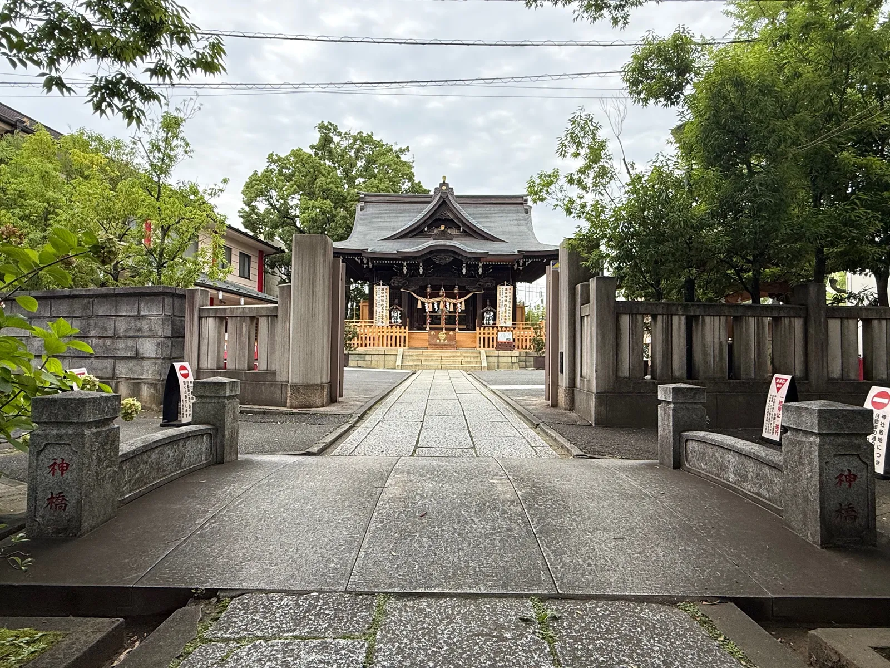
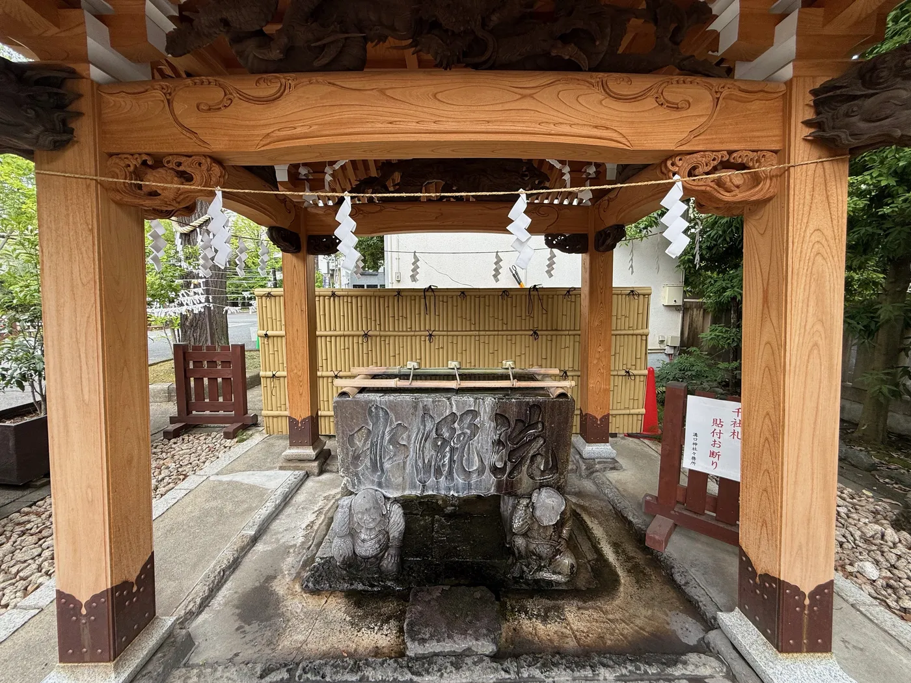

参道を、まっすぐに
神橋を渡り、玉垣の参道を進むと、正面に拝殿が見えてまいります。都市の只中にありながら、一歩ごとに街の音が遠のいていく——溝口神社の参道は、心を整えるための短い道のりです。

手水に、心を映す
拝殿へ進む前に、手水舎で手と口を清めます。清めるのは手先だけではなく、日々の慌ただしさを一度置いて、祈りへ向かう心そのものです。

神橋を渡り、玉垣の参道を進むと、正面に拝殿が見えてまいります。都市の只中にありながら、一歩ごとに街の音が遠のいていく——溝口神社の参道は、心を整えるための短い道のりです。

拝殿へ進む前に、手水舎で手と口を清めます。清めるのは手先だけではなく、日々の慌ただしさを一度置いて、祈りへ向かう心そのものです。
